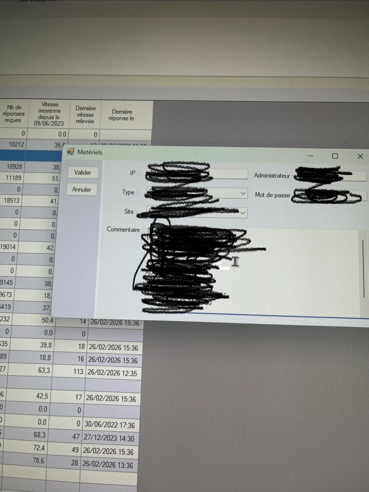

Support utilisateur quotidien
Création et suivi de tickets, accompagnement du personnel soignant et administratif, opérations Active Directory, gestion des groupes et réinitialisation de mots de passe.
Bienvenue sur le Portfolio de
Étudiant en BTS SIO option SISR, en alternance à la Clinique Montfleuri Saint Roch à Marseille. Je gère le support utilisateur, le réseau local, Active Directory et le parc informatique dans un environnement de santé où la disponibilité du SI est critique pour les 17 sites du groupe.
Mon parcours combine la formation académique du BTS SIO et l'expérience aussi d'un système d'information en milieu hospitalier. Cette double approche me permet de relier réseau, support, gestion des accès et documentation à des besoins réels d'établissement de santé mais egalement de developer d'aute competence comme relation utilisateur.
Analyse, priorisation et résolution d'incidents matériels, logiciels et comptes utilisateurs.
Adressage, VLAN, DHCP, supervision et premiers diagnostics de connectivité LAN.
Gestion des droits, comptes AD, GPO et sensibilisation des utilisateurs.
Procédures, comptes rendus d'intervention et suivi via notre outil de gestion de documentation et Jira.
Clinique Montfleuri Saint Roch — Marseille 11e
J'interviens dans un environnement de santé à forte criticité, où la disponibilité du système d'information accompagne directement la continuité des soins et des services administratifs rendant les services d'information essentiels.
Création et suivi de tickets, accompagnement du personnel soignant et administratif, opérations Active Directory, gestion des groupes et réinitialisation de mots de passe.
Préparation, configuration Windows 10/11, intégration au domaine AD, application des GPO et validation avant remise à l'utilisateur.
Diagnostic de connectivité, adressage IP, configuration VLAN, et remontée d'informations exploitables pour le reste des équipes réseau.
Dès mon arrivée, j'ouvre notre outil interne de Surveillance Technique. Ce logiciel est essentiel pour suivre notre parc réparti sur 17 cliniques (sites différents). J'y retrouve toutes les informations critiques : adresses IP, identifiants des postes, adresses MAC, modèles de PC, le tout trié par établissement.
Je lance ensuite Jira, notre solution de ticketing, pour analyser et répondre aux demandes d'assistance des utilisateurs, tout en respectant les priorités médicales.
Je prépare de nouveaux postes en utilisant des scripts d'automatisation `.bat` créés par notre admin réseau. Une fois le poste prêt, je l'ajoute dans la Surveillance Technique et lui attribue les droits AD.

Aperçu de notre outil de Surveillance Technique multisite flouté pour des raisons de confidentialité
Clinique Montfleuri / support & infrastructure
Mes missions couvrent le support N1/N2, la gestion du parc des 17 cliniques, l'administration des comptes et le suivi du réseau local. Chaque intervention est tracée et documentée.
Configuration via scripts `.bat`, intégration AD, paramétrage et ajout à la surveillance technique.
Création, traitement et clôture des tickets Jira. Inventaire automatique du parc avec FusionInventory.
Diagnostic, assistance en présentiel ou à distance, suivi de résolution et communication avec l'utilisateur.
Création/suppression de comptes, reset mots de passe, gestion des droits et GPO selon les profils métier.
Support & Ticketing
Jira / GLPI
Utilisés au quotidien pour gérer les demandes d'assistance, prioriser les urgences cliniques, tracer chaque intervention et suivre l'inventaire matériel.
Gestion Multisite
Surveillance Technique
Outil interne centralisant les adresses IP, adresses MAC, identifiants des postes et configurations déployées sur l'ensemble de nos 17 cliniques.
![Réseau](data:image/svg+xml,%3Csvg%20xmlns%3D%22http%3A//www.w3.org/2000/svg%22%20viewBox%3D%220%200%20128%20128%22%20role%3D%22img%22%20aria-label%3D%22Network%22%3E%0A%20%20%3Cdefs%3E%0A%20%20%20%20%3ClinearGradient%20id%3D%22n%22%20x1%3D%220%22%20y1%3D%220%22%20x2%3D%221%22%20y2%3D%221%22%3E%0A%20%20%3Cstop%20offset%3D%220%25%22%20stop-color%3D%22%2310b981%22/%3E%0A%20%20%3Cstop%20offset%3D%22100%25%22%20stop-color%3D%22%2314b8a6%22/%3E%0A%20%20%3C/defs%3E%0A%20%20%3Crect%20width%3D%22128%22%20height%3D%22128%22%20rx%3D%2228%22%20fill%3D%22%230f172a%22/%3E%0A%20%20%3Ccircle%20cx%3D%2264%22%20cy%3D%2234%22%20r%3D%2212%22%20fill%3D%22url%28%23n%29%22/%3E%0A%20%20%3Ccircle%20cx%3D%2233%22%20cy%3D%2284%22%20r%3D%2212%22%20fill%3D%22url%28%23n%29%22/%3E%0A%20%20%3Ccircle%20cx%3D%2295%22%20cy%3D%2284%22%20r%3D%2212%22%20fill%3D%22url%28%23n%29%22/%3E%0A%20%20%3Cpath%20d%3D%22M64%2046v16M41%2076l15-10M87%2076L72%2066%22%20stroke%3D%22%23a7f3d0%22%20stroke-width%3D%228%22%20stroke-linecap%3D%22round%22/%3E%0A%20%20%3Crect%20x%3D%2223%22%20y%3D%2294%22%20width%3D%2220%22%20height%3D%228%22%20rx%3D%224%22%20fill%3D%22%23a7f3d0%22%20opacity%3D%220.8%22/%3E%0A%20%20%3Crect%20x%3D%2254%22%20y%3D%2244%22%20width%3D%2220%22%20height%3D%228%22%20rx%3D%224%22%20fill%3D%22%23a7f3d0%22%20opacity%3D%220.8%22/%3E%0A%20%20%3Crect%20x%3D%2285%22%20y%3D%2294%22%20width%3D%2220%22%20height%3D%228%22%20rx%3D%224%22%20fill%3D%22%23a7f3d0%22%20opacity%3D%220.8%22/%3E%0A%3C/svg%3E%0A)
Infrastructure
Réseau LAN — VLAN & QoS
Diagnostic de connectivité, gestion de la segmentation réseau et suivi de la qualité de service sur le réseau local des cliniques.
Application web — Beta
Mise en place avec aide de l'IA d'une application web interne de gestion des congés pour le personnel clinique, intégrant une interface d'approbation pour les responsables et un suivi automatisé dans notre système de documentation permetant au utilisateur de suivre l'état de leurs demandes sans devoir passer par une demande sur feuille comme cela etait le cas auparavant.
Editeur de code, base de données et navigateur web.
TypeScript, JavaScript, React, Next.js, Tailwind CSS, SQL.
Suivi des avancées via la Surveillance Technique pour la tracabilité.
Isolation des informations sensibles et conformité aux réglementations.
Écoute utilisateur, pédagogie et communication claire en milieu de santé.
Respect des procédures, traçabilité des interventions et priorisation des incidents.
Diagnostic methodical, veille technique et curiosité pour la cybersécurité.
Problème rencontré en alternance
À la clinique, les téléphones IP et les postes PC partageaient le même réseau sans segmentation. Résultat : coupures d'appels, voix hachée, latence excessive. Un problème classique de cohabitation trafic voix/data non maîtrisée.
Téléphonie IP — trafic RTP/UDP
Téléphones IP
Très sensible à la latence (<150 ms) et au jitter. Nécessite une bande passante garantie en temps réel.
Réseau Data — trafic TCP
Postes, serveurs, imprimantes
Trafic en rafales, tolérant aux délais. Peut saturer le lien et écraser les paquets voix.
Causes identifiées
Absence de QoS — aucune priorité accordée aux paquets voix.
Pas de VLAN dédié voix — téléphones et PC sur le même segment.
Switch non configuré — ports ToIP sans marquage CoS/DSCP.
Solutions appliquées
VLAN Voice (VLAN 20) — isolation complète du trafic voix.
QoS — DSCP EF / CoS 5 — priorité absolue aux paquets RTP.
Monitoring latence/jitter — supervision continue des flux réseau.
Dans un établissement de santé, les comptes critiques (dossiers patients, logiciels métier) doivent être protégés au-delà du mot de passe simple. Suivi des standards FIDO2.
Les hôpitaux sont des cibles privilégiées. Étude de la sauvegarde 3-2-1, des plans PCA/PRA et de la segmentation réseau pour limiter la propagation.
L'IA générative facilite le spear phishing ultra-personnalisé. Dans une clinique, une pièce jointe malveillante peut compromettre l'ensemble du SI.